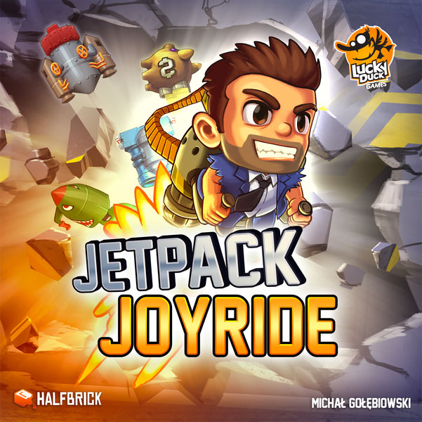
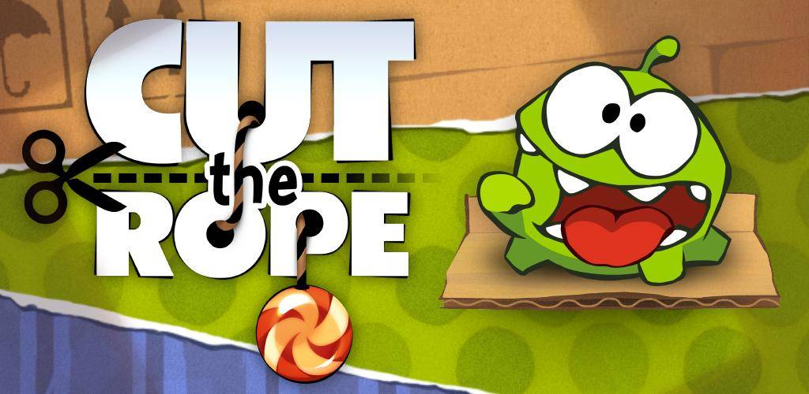

Hill Climb Racing by Fingersoft
Hill Climb Racing is a free offline car/flying game. It is about this guy who goes on a journey to travel along the most insane environments with no care about the possible limitations. Within this game you can upgrade the stuff within your vehicle or upgrade your vehicle into another. The point of these upgrades is so you can reach beyond the limitations with the variety of maps that are given by purchasing with the coins you are given with each play. The better the vehicle, the better the reward, the better the maps!

Angry Birds 2 by Rovio Entertainment Oyj
Angry Birds 2 is a free offline bird game. This game is about birds who fight pigs to save their eggs. They do this by launching themselves to the destroy the structures they may face and bring down the pigs. The way this game works is that there are different maps and you are given different obstacles with the different birds you are given. You must complete a level to progress to the next and you will continously until all levels are completed in which you saved all the eggs.
Jet Pack Joy Ride by HalfBrick
text
Cut The Rope by ZeptoLab
text